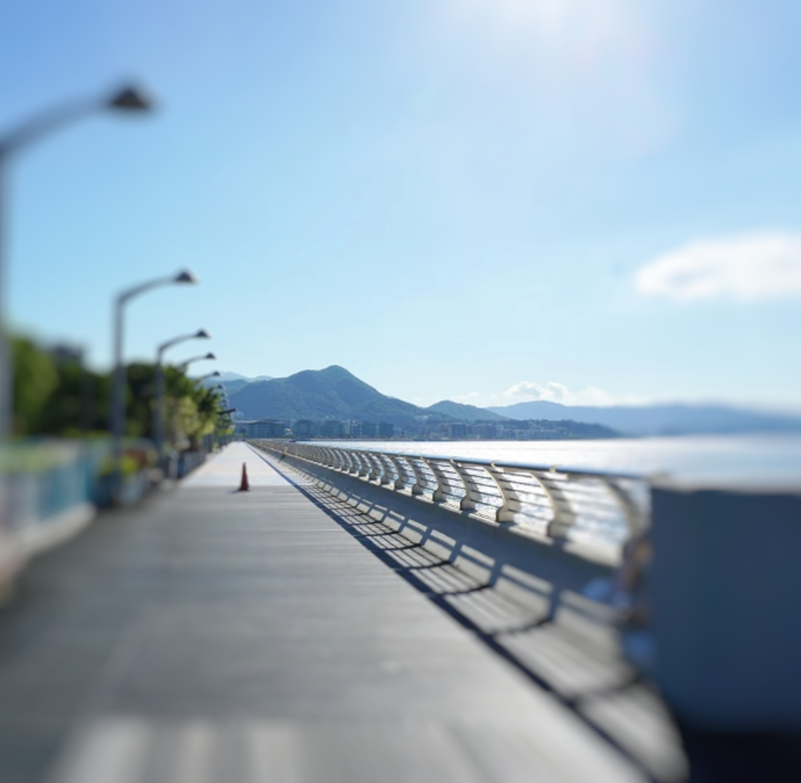

Our showroom features StoryMaps from S4 to S6 students who have been recognized in the Category 3 awards.
This year's theme is "Environmental, Social, and Governance" (ESG), which addresses crucial issues for our city's sustainable future.
Students applied ESG principles to suggest improvements for our city in areas of sustainability, resilience, and diversity. The ESG themes touch upon environmental care, social inclusivity, and resource access, demonstrating the potential of spatial data in problem-solving.
New Town Report
More Info
St. Paul's Co-educational College
Is Hong Kong's ambitious 50-year town project delivering on its vision? Dive into a spatial analysis that unveils the city's urban truths, from environmental concerns to commuting challenges. This study offers a fresh look at Hong Kong's urban planning.
Red Tide in Hong Kong
More Info
SKH Tang Shiu Kin Secondary School
Explore the phenomenon of red tides in Hong Kong's waters, caused by rapid algal blooms. Discover their effects on marine life and local residents in this in-depth study on their spatial impact.
Smart Community Fridge Supply Chain
More Info
Kowloon Sam Yuk Secondary School
In 2022, a unique fridge appeared on a campus - not for cooling, but for sharing food with those in need. Dive into how repurposed fridges, combined with STEM and spatial data, are making strides in Environmental, Social, and Governance (ESG) goals.
Where's the Waterfront?

More Info
HKFEW Wong Cho Bau Secondary School
With the fourth-highest population density globally, Hong Kong residents face intense daily stresses. There's a need for open spaces for relaxation. Properly planned waterfronts can improve living standards.